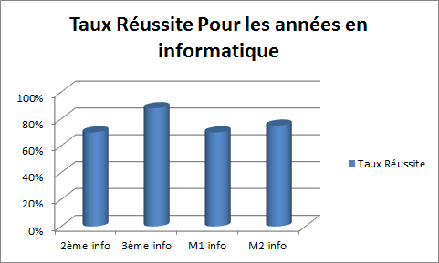
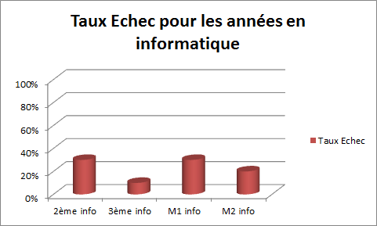

Dans cette page on va présenter des statistiques concernant le taux de réussite, le taux d'echec pour chaque année de parcours de l'etudiant dans ce département.
Taux de réussite
Ce diagramme represente le taux de réussite des etudiants en informatique

Taux d'échec
Ce diagramme represente le taux d'échec des étudiants en informatique

On remarque de ces diagrammes que le plus haut taux d'echec (taux de réussite le plus bas) des étudiants c'est en 2ème année et en master1, donc il faut que l'étudiant travaille sérieusement dans ces années.